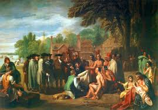

Economic Structure
A picture representing colonial economic activity.
Colonial communities heavily depended on Indigenous labor for their economic viability. While many were subjected to forced labor systems, some Native populations migrated to colonial cities seeking economic opportunities, particularly in mining centers or larger administrative hubs. This voluntary migration, though often driven by dire circumstances in rural areas, represents a form of self-determination where Indigenous individuals adapted to new economic realities by engaging with the colonial urban economy.